Recording, reports & planningMonday 5 Oct · record → report → plan
SUT
Portal eJPJ (mock)http://localhost:3000
SLA
Peak scenario07-beban-puncak-cukai.jmx
A course for JPJ officers · target localhost:3000 only · synthetic data
What's in it for you
What you take home after 2 days
🎯
Understand performance testing
Load, Stress, Spike, Soak, Scalability — and the ethical conditions before generating load.
🧱
Build a Test Plan
Thread Group, HTTP Request, Assertion, Timer and CSV Data Set in the GUI.
🎬
Record & correlate
HTTP(S) Test Script Recorder, then JSON Extractor for token + csrf.
🔁
Replay done right
Correlation, CSV parameterisation, Transaction Controller — turning a recording into a repeatable test.
📊
Reports & terminology
Every part of the HTML dashboard: APDEX, percentile, throughput, latency — and how to write up findings.
🗺️
Plan a performance test
Measurable NFRs, load model (Little's Law), test types, entry/exit criteria & SLA -Jsla_ms.
Days221 Sep & 5 Oct 2026
Sessions8S1–S4 each day
Exercises15each with a ✅ checkpoint
Reference test plans11.jmx — the “answer key”
Agenda · 2 days
Two days, eight sessions, one peak scenario
Day 1 · Monday 21 Sep · JMeter Fundamentals
9.00 – 10.30
S1Introduction to performance testing & setup
10.30Break
10.45 – 1.00
S2Test Plan anatomy, Thread Group & Listeners
1.00 – 2.00Lunch
2.00 – 3.30
S3Assertions, Timers & CSV Data Set
3.30Break
3.45 – 5.00
S4Recording: HTTP(S) Recorder
Day 2 · Monday 5 Oct · Recording, reports & planning
9.00 – 10.30
S1Record & replay
10.30Break
10.45 – 1.00
S2Making a recording replayable
1.00 – 2.00Lunch
2.00 – 3.30
S3Reports & terminology
3.30Break
3.45 – 5.00
S4Planning a performance test
📝
The Borang penilaian (course evaluation form) on pelatih.my opens at 2.00 pm on Day 2. Every session ends with a session quiz — that is the evidence of your progress.
SYSTEMUnder real-world conditionsLog in → check → pay scenario
→
ANSWERMaximum capacity & SLAHow many before it slows down or fails?
Load testing is a category of performance testing that determines how a system performs under real-world conditions. It verifies that the existing infrastructure is sufficient, measures the maximum load it can handle, and determines its concurrent user capacity.
⏰
The last day before road tax prices go up — thousands of citizens log in at once. Can the portal handle that surge?
💡
Functional testing: “does it work?” · Performance testing: “does it hold up when many people arrive at once?”
Tool landscape
Tools for load testing
OPEN-SOURCE · JAVA
Apache JMeter
Free, mature, large community. The focus of this course.
COMMERCIAL
WebLOAD
JavaScript scripting, built-in analytics reports.
SMARTBEAR
LoadUI
API load testing, closely tied to SoapUI.
ENTERPRISE
LoadRunner
Micro Focus / OpenText — many protocols, expensive licence.
TRICENTIS
NeoLoad
Focus on automation & CI integration.
CLOUD
LoadNinja
Cloud-based, uses real browsers.
✅
We chose JMeter: free, runs anywhere Java runs, .jmx files can be stored in Git, and it fits CI/CD.
Our tool
What is Apache JMeter — and why it?
Fully open-source software built on Java for load testing and measuring performance. It evaluates functional behavior under load.
Originally for web applications — now covers APIs, databases, FTP, JMS and much more.
⚠️
JMeter is not a browser: it does not run page JavaScript. It sends HTTP requests — just like 1,000 clients at once.
Free
No licence cost.
Many test types
Load, stress, spike, soak in one tool.
Cross-platform
Windows, macOS, Linux — as long as Java is there.
Extensible
JSR223 Groovy, functions, plugins.
Recording & Playback
Record browser traffic into a Test Plan.
Large community
Extensive documentation & plugin ecosystem.
System Under Test http://localhost:3000
Portal eJPJ (mock) — the endpoints we test
Method
Endpoint
Requires
Response
When
GET
/api/health
—
{"status":"ok","masa":…}
D1 S2
GET
/api/kenderaan/:no/cukai
—
{no_pendaftaran, amaun, tempoh_bulan} · 404 if not found
D1 S2–S3
GET
/api/saman?no_kp=
—
{no_kp, saman:[…]}
D1 S3
POST
/api/log-masuk
—
Body {no_kp, kata_laluan} → {token, csrf, nama, mesej}
D1 S4 · D2
GET
/api/kenderaan?no_kp=
token
{no_kp, kenderaan:[…]} · 401 without a valid token
The token is sent as Authorization: Bearer <token>; csrf is sent in the JSON body. Any non-empty password is accepted.
Ethics & the law
Rule number one: localhost only
⛔
JMeter is a load generator. From the server's point of view, 200 JMeter threads look the same as 200 attackers. Load testing without written permission = a denial-of-service (DoS) attack — even if your intentions are good.
✅ Allowed
Course mock: http://localhost:3000 (sut/)
Staging owned by your organisation with written permission: scope, hosts, time window, load level
Synthetic data only
❌ Prohibited
The real JPJ portal / any public site without permission
“Just a quick try” on production during office hours — or at night
Real citizens' IC numbers / registration numbers in a CSV
HABIT
Before Start ▶: open HTTP Request Defaults — Server = localhost, Port = 3000. Every time, every plan.
How the labs work
Predict → Start → ✅ Checkpoint → session quiz
🔮 Predict firstHow many samples? What Error %? Will throughput go up or down? Write it down, then click Start.
🛠️ Build it yourselfThe reference plans in test-plans/ are the “answer key” — open them after the checkpoint, or if stuck > 10 minutes.
✅ CheckpointTick honestly — the LMS cannot see the runs on your laptop.
🎯 Session quizThe last item of every checkpoint. That is the evidence that is assessed.
Two windows always open
Terminal A: SUT (cd sut && node server.js) — do not close it. Terminal B / JMeter GUI: exercises.
$ cd sut && node server.js
Portal eJPJ (TIRUAN) berjalan di http://localhost:3000
Latensi tiruan : 40-180 ms
Kadar ralat : 1.0%
Tekan Ctrl+C untuk berhenti.
🧭
When stuck, check in this order: Terminal A log → View Results Tree (Request & Response data) → Debug Sampler → jmeter.log.
Day 1 · Monday 21 Sep 2026
Apache JMeter Fundamentals & Load Testing
Thread Group · Assertion · CSVRecording → replay fails
S1Introduction to Performance Testing & Setup9.00 – 10.30 am
S2Test Plan Anatomy, Thread Group & Listeners10.45 am – 1.00 pm
S3Assertions, Timers & CSV Data Set2.00 – 3.30 pm
S4Recording a Test Plan: HTTP(S) Test Script Recorder3.45 – 5.00 pm
output: 01-hello-jpj → 04-rakaman-mentah.jmx
DAY01
Day 1 · Today's objectives
By the end of Day 1, you can…
#
Objective (measurable)
Session
Evidence
O1
Distinguish 5 types of performance test & state the ethical conditions
S1
S1 quiz · valid target = localhost:3000
O2
Install Java + JMeter (Windows PATH) & run the SUT
S1
jmeter -v → 5.6.x · /api/health → "status":"ok"
O3
Build a first Test Plan
S2
Exercise 1: View Results Tree green, code 200
O4
Set threads / ramp-up / loop & predict the sample count
S2
Exercise 2: prediction 20 × 5 = 100 = # Samples
O5
Place elements in the right position (scope follows position)
S2
Exercise 7 challenge: explain scope to a colleague
java --version # confirm Java is present
# macOS
brew install openjdk@21
brew install jmeter
# Windows
winget install EclipseAdoptium.Temurin.21.JDK
# Linux
sudo apt install openjdk-21-jdk
jmeter --version # confirm JMeter is present
Download the binaryjmeter.apache.org/download_jmeter.cgi — the .zip file.
UnzipTo a short path, e.g. C:\apache-jmeter-5.6.3.
Launch the GUIbin/jmeter (macOS/Linux) · bin\jmeter.bat (Windows).
⚠️
Avoid folders with spaces / special characters (C:\Program Files\…, apache-jmeter-5.6.3 (1)) and do not run it directly from inside the .zip.
☕
“Java not found”? Set JAVA_HOME to the JDK folder and add %JAVA_HOME%\bin to PATH. Confirm: java -version.
Day 1 · S1 — Windows
Windows: run jmeter from any folder (PATH)
Unzip to a permanent locationC:\apache-jmeter-5.6.3
Start → “environment variables”Edit the system environment variables → Environment Variables…
User variables → Path → Edit → NewPaste C:\apache-jmeter-5.6.3\bin → OK on every window. No admin needed.
Close & reopen the terminalThe new PATH only takes effect in a new terminal.
Confirmjmeter -v shows version 5.6.x.
PowerShell · user PATH (no admin)ps
[Environment]::SetEnvironmentVariable("Path",
$env:Path + ";C:\apache-jmeter-5.6.3\bin", "User")
# close & reopen the terminal, then:
jmeter -v
💡
On Windows, jmeter runs jmeter.bat in bin. All course commands (jmeter -n -t … -l … -e -o …) are the same — just use backslashes: hari-2\test-plans\06-ujian-beban-nogui.jmx.
🧯
“'jmeter' is not recognized” after adding PATH? The old terminal still holds the old PATH — open a new terminal.
Day 1 · S1 — Operating modes
GUI to build, non-GUI for load
GUI MODE · jmeter
Build & debug
Add elements, use View Results Tree, verify logic with 1–5 users. Heavy — memory & CPU spent drawing the GUI.
NON-GUI MODE · jmeter -n
Real load
Far fewer resources, more threads, results to a .jtl file. Suited to servers & CI/CD (Day 2).
Flag
Meaning
-n
non-GUI
-t plan.jmx
The Test Plan to run
-l hasil.jtl
Results file (CSV)
-e -o folder/
Generate the HTML dashboard — folder must be empty / not yet exist
RULE
Build in the GUI, run load in non-GUI. If the GUI is struggling, what you are measuring is JMeter — not the SUT.
Day 1 · S1 — System Under Test
Run the Portal eJPJ (mock) — leave it open all day
Terminal A · SUTsh
cd sut
node server.js # Node.js 18+, no npm install
# another terminal — quick check
curl -s http://localhost:3000/api/health
# "slow" SUT for the demo (S3)
LATENCY_MIN=300 LATENCY_MAX=900 node server.js
Config, Timer, Assertion & Listener affect every sampler at the same level or deeper. Under the Thread Group → all samplers. A child of one sampler → only that sampler.
Two surprises for beginners
(1) Timers run before the sampler. (2) A timer under a Thread Group with 3 samplers pauses 3 times per iteration — once for each sampler in its scope.
🐞
Misplaced elements are the most common source of bugs. The visual order in the tree does not change the execution order — except among elements of the same type.
Day 1 · S2 — Step 1
First Test Plan: one user, /api/health
Test Plan → Add → Threads (Users) → Thread GroupThreads 1 · Ramp-up 1 · Loop 1
Thread Group → Add → Config Element → HTTP Request DefaultsProtocol http · Server localhost · Port 3000
Add → Listener → View Results TreeSave the .jmx, then Start ▶
Second sampler: Path /The HTML info page that lists the endpoints
HTTP REQUEST DEFAULTS
One place for the SUT address
Every HTTP Request beneath it inherits server, port, protocol. Changing localhost → a test server? Change it once — and check it once from an ethics standpoint.
VIEW RESULTS TREE · 3 TABS
Green, code 200
Sampler result (code, time, size) · Request (what was actually sent) · Response data (choose JSON for pretty display).
Ramp-up = 0 creates an unrealistic “shock” — unless it really is a spike test. A gradual ramp-up mimics real arrivals and gives the system time to warm up.
Thread Group — Number of Threads · Ramp-up period · Loop Count
Day 1 · S2 — Predict first
Calculate before you click Start
FORMULA
# Samples = Threads × Loop Count × number of samplers · ramp-up only changes the launch rate, not the total
Threads
Ramp-up
Loop
Samplers
Total samples
New thread every…
1
1
1
2 (/api/health, /)
2
—
20
10
5
1
100
0.5 s
10
5
10
1
100
0.5 s
50
20
1
1
50
0.4 s
⚠️
“20 threads = 20 concurrent requests all the time” — not necessarily. If threads finish their loops before the last thread is launched, actual concurrency is much lower. See Active Threads Over Time in the HTML report (Day 2).
Day 1 · S2 — Step 3
HTTP Header Manager & other Config Elements
Header Managers can be nested — JMeter merges both for that sampler:
node sut/server.js & # make sure the SUT is running
jmeter -n -t hari-1/test-plans/04-rakaman-mentah.jmx \
-l /tmp/r04.jtl
# log-masuk → 200 ; kenderaan → 401 ; bayar-cukai → 401
🔒
The recorder hard-codes Authorization: Bearer 4e6b9c2a-…-token-rakaman-luput and "csrf": "a1b2c3d4…-csrf-rakaman-luput".
🌉
Fixing this = correlation (Day 2). Fixed version: hari-2/test-plans/04-korelasi-log-masuk.jmx.
Day 1 · S4 — Report & tidy-up
HTML report from a recording & the post-recording clean-up checklist
terminal · -e -osh
# output folder MUST be empty / not yet exist
jmeter -n -t hari-1/test-plans/04-rakaman-mentah.jmx \
-l /tmp/rec.jtl -e -o /tmp/laporan-rakaman/
open /tmp/laporan-rakaman/index.html
# or generate LATER from an existing .jtl
jmeter -g /tmp/rec.jtl -o /tmp/laporan-rakaman/
Recording
Error %
Reason
Raw04-rakaman-mentah
~67%
2 of 3 fail (401)
Correlated05-transaksi-penuh
0%
JSON Extractor captures token/csrf
Remove static asset / analytics samplers — not the load being measured
Start ▶ → View Results Tree/api/log-masuk green · /api/kenderaan & …/bayar-cukai red
Quick questions (verbal)
Answer
JMeter recorder proxy port?
8888 (the SUT is 3000)
Why does playback fail with 401?
The token in Authorization is an old value
Average or percentile for an SLA?
Percentile (90/95/99)
Why no View Results Tree under load?
It keeps every response in RAM → the load generator chokes
CLASS RULE
Every plan you open — check the target first: localhost:3000. That is today's first ethical habit.
Day 2 · S1 — Plan first, then record
A 4-step user journey — on paper first
#
User action
HTTP request
Transaction name
Expected dynamic data
1
Log in with IC No.
POST/api/log-masuk
T01_LogMasuk
Response token, csrf · input no_kp, kata_laluan
2
View vehicle list
GET/api/kenderaan?no_kp=…
T02_SenaraiKenderaan
Header Authorization: Bearer <token>
3
Check road tax (quote)
GET…/WXY1234/cukai
T03_SemakCukai
no_pendaftaran, response amaun, tempoh_bulan
4
Pay road tax
POST…/WXY1234/bayar-cukai
T04_BayarCukai
Token header + body csrf, amaun
🖱️
One user action = one transaction. One click on a real portal can generate 10–50 requests. Users feel the time of that click — so group them in a Transaction Controller.
🏷️
Naming convention: step number + business action (T03_SemakCukai) — easy to sort, and it will appear as the label in every report today.
Day 2 · S1 — Set up the recorder rakam-template.jmx
HTTP(S) Test Script Recorder: settings before Start
The mock keeps sessions in memory; restart = all old tokens invalid — just like an expired session.
🪤
False pass: replay without a restart → possibly 4 × 200. 300 virtual users would share one session & one csrf — and fail tomorrow morning. Green ≠ correct.
Day 2 · S1 — Diagnosis
View Results Tree: 401 (token) vs 403 (csrf)
Read three tabs, in order
Sampler resultResponse code: 401 · Unauthorized · Load time, Latency, Connect Time
RequestWhat was actually sent: Authorization: Bearer <recorded-token> ≠ the new T01 token
Response data{"ralat":"Token tidak sah atau tamat tempoh"}
🧪
Replay is a functional test first: 1 user × 1 loop, 0 errors — before any load. Load on a broken script only measures how fast the error page is.
Code
Meaning in the SUT
Fix
401
Who are you? token missing / invalid
Extract token → Bearer ${token}
403
Is this request valid? token valid, csrf wrong
Extract csrf → "csrf": "${csrf}"
404
Path / vehicle does not exist
Check extractor / CSV (NONE?)
EXPERIMENT — CORRELATE THE TOKEN ONLY
JSON Extractor $.token → Bearer ${token}; csrf left untouched
T02 GET /api/kenderaan200T04 POST …/bayar-cukai403
{"ralat":"Token CSRF tidak sah — sila log masuk semula"}
Day 2 · Session 2
Make the Recording Replayable
S2 · 10.45 am – 1.00 pmresult ≈ 05-transaksi-penuh.jmx
10-point checklist · parameterisation vs correlation
mkdir -p hasil # -o parent folder MUST exist first
jmeter -n -t hari-2/test-plans/05-transaksi-penuh.jmx \
-l hasil/r05.jtl -e -o hasil/laporan05
# regenerate from an existing .jtl, graphs every 5 s
jmeter -g hasil/r05.jtl -o hasil/laporan05-5s \
-Jjmeter.reportgenerator.overall_granularity=5000
jmeter.reportgenerator.…
Default
Use
overall_granularity
60000
Interval for Over Time & Throughput graphs (min. 1000)
apdex_satisfied_threshold
500
APDEX T threshold (ms)
apdex_tolerated_threshold
1500
APDEX F threshold (ms)
Flag
Meaning
-n · -t
Non-GUI · test plan
-l
Raw results file (creates its own folder)
-e
Generate dashboard after the run
-o
Output folder: empty, and the parent folder must exist
-g
Dashboard from an existing .jtl (+ -o)
-J<name>=…
Property: ${__P()}and the report generator
Cannot write to '…' as folder is not empty… folder does not exist and parent folder is not writable
🚫
GUI listeners off during load — they process every sample inside the JVM generating the load. Analysis happens afterwards.
Day 2 · S3 — Dashboard map
What's in index.html — and the order to read it
MENU · DASHBOARD
a) Test and Report information
Source file · Start/End Time · Filter for display
b) APDEX
Apdex · T · F · Label
c) Requests Summary
PASS / FAIL pie (HTTP samples)
d) Statistics
The most important table
e) Errors
Error type · count · %
f) Top 5 Errors by sampler
Which step failed, and why
CHARTS · OVER TIME
6 graphs
Response Times, Percentiles, Active Threads, Bytes, Latencies, Connect
CHARTS · THROUGHPUT
6 graphs
Hits, Codes, Transactions, Total TPS, RT/Latency Vs Request
CHARTS · RESPONSE TIMES
4 graphs
Percentiles, Overview, Time Vs Threads, Distribution
5-minute reading order
Test and Report informationCorrect & complete run? Stopped early = warning
Statistics — transaction rowp95 & Error % vs NFR
Errors / Top 5What failed?
Active Threads Over TimeDid the load model happen?
Response Times / Percentiles Over TimeStable throughout steady state?
Total Transactions Per SecondThroughput follows load?
Day 2 · S3 — (b) APDEX
APDEX: satisfaction score 0 – 1
FORMULA
APDEX = (Satisfied + Tolerating / 2) ÷ Total samples
Satisfied≤ T (500 ms)
Tolerating — counts ½T < time ≤ F (1500 ms)
Frustratedtime > F — OR FAILED
VERIFIED · RUN 07 R1
bayar-cukai BMT3030: 196 samples, 3 failed (500)
APDEX = 193 / 196 = 0.985 — a failed sample = Frustrated even if fast.
⚠️
A 4-step transaction (≈ 450 ms) judged against the same T = 500 ms → transaction APDEX 0.862–0.875 even though the system is healthy. Use jmeter.reportgenerator.apdex_per_transaction.
Score
Usual interpretation
≥ 0.94
Excellent
0.85 – 0.93
Good
0.70 – 0.84
Fair
< 0.70
Poor
Columns
Apdex · T (Toleration threshold) · F (Frustration threshold) · Label
Total
The JMeter 5.6 APDEX Total row also counts transaction samples (Statistics Total does not)
R1
Total 0.971 · transaction 0.862
Day 2 · S3 — Screenshots
First dashboard screen: APDEX healthy vs breached
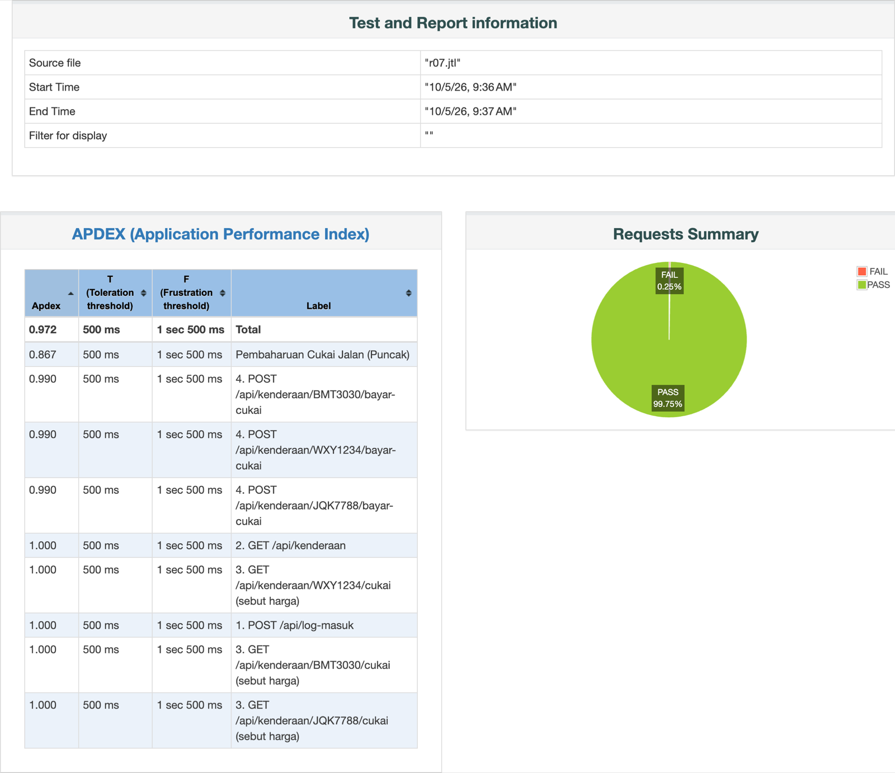
Peak run: run info · APDEX per label (Total 0.972) · pass/fail pie
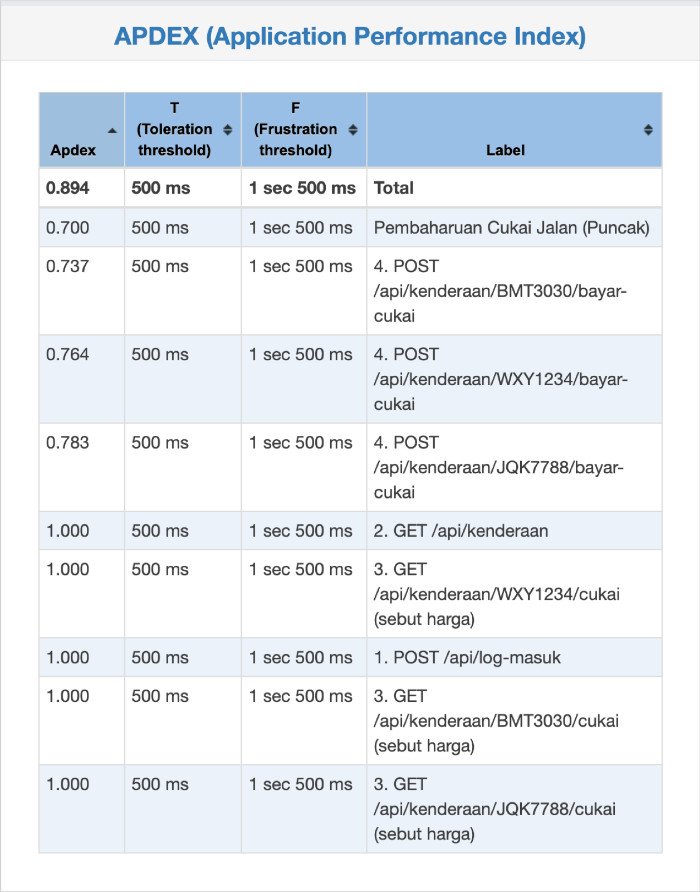
Same test with -Jsla_ms=150: APDEX drops on the bayar-cukai labels
👀
Read the Total row first, then sort by APDEX ascending — the worst label is your first finding.
Day 2 · S3 — (d) Statistics
The Statistics table — every column, with the R1 transaction row
Column
Group
Meaning & how to read it
R1 · …(Puncak)
statistics.json
Label
—
Sampler/transaction name. The Total row = HTTP samples only (2432)
4xx/5xx codes, network errors, or failed assertions
6
errorCount
Error %
Executions
FAIL ÷ #Samples × 100 — compare with the NFR (< 1%)
1.00%
errorPct
Average
Response Times (ms)
Mean — easily skewed by extreme values
446
meanResTime
Min / Max
Response Times (ms)
Fastest / slowest — Max = one sample, not an SLA
— / 693
min/maxResTime
Median
Response Times (ms)
50% of samples ≤ this value — the “typical experience”
446
medianResTime
90th / 95th / 99th pct
Response Times (ms)
Basis of SLAs/NFRs; big gap Median → 99th = long tail
554 / 583 / 644
pct1/2/3ResTime
Transactions/s
Throughput
Samples completed per second for the label; transaction row = business transactions/s
10.46
throughput
Received / Sent
Network (KB/sec)
Bandwidth — a sudden rise = large responses / unnecessary resources
—
…KBytesPerSec
R1 Total: 2432 samples · 0.25% errors · 41.29/s. 630 logins but 598 transactions — iterations not finished when the 60 s ended produce no transaction sample.
Day 2 · S3 — Screenshots
The Statistics table from real runs
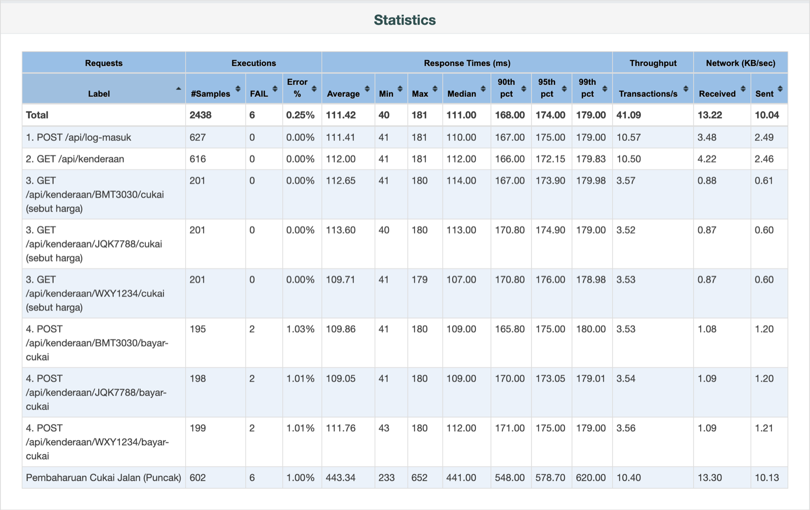
Peak run (50 users, 60 s): read p90/p95/p99 and Error % first, then throughput
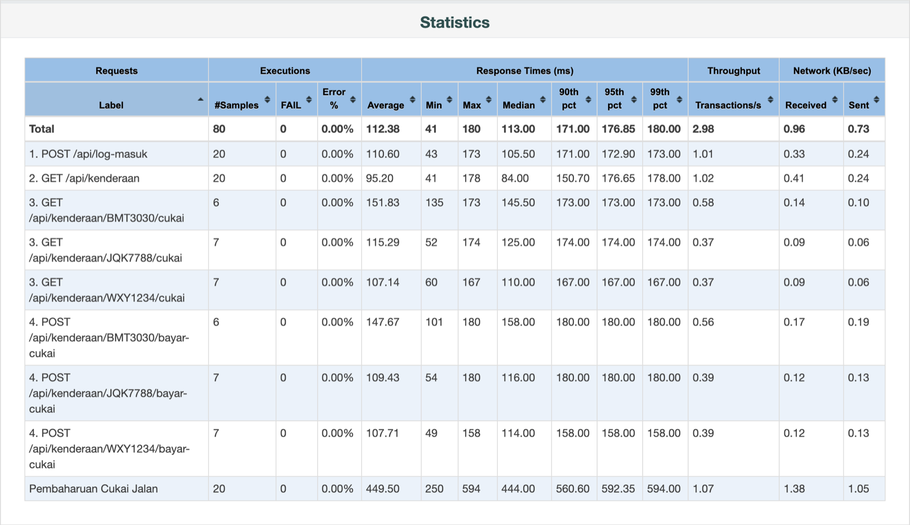
Plan 05: the Transaction Controller row ≈ sum of the 4 steps (449 ms)
⚠️
Order: p90 / p95 / p99 and Error % → Transactions/s. Average and Max alone never decide PASS/FAIL.
Day 2 · S3 — Percentile vs average
Averages lie — NFRs are written in percentiles
99 requests × 100 ms + 1 × 10,000 ms
🙈
Average ≈ 199 ms, but 99th pct = 10,000 ms — and one citizen waits 10 seconds.
R1 · Pembaharuan Cukai Jalan (Puncak) transaction
Median446
Average446
90th pct554
95th pct583
99th pct644
Max693
p95 = 583 ms
95% of transactions finish in ≤ 583 ms; 5% are slower. Not the average, not the slowest.
📏
Small gap Median → 99th (446 → 644) = tight distribution. Big gap = long tail — investigate.
Day 2 · S3 — (c) Requests Summary · (e) Errors · (f) Top 5
What failed, how much, and at which step
Errors · Type of error · Number of errors · % in errors · % in all samples
Example row (verified)
Meaning
401/Unauthorized · 2 · 100% · 66.67%
Replay of 04-rakaman-mentah
500/Internal Server Error
Server error (SUT ~1% of payments)
The operation lasted too long: It took 166 milliseconds, but should not have lasted longer than 150 milliseconds.
Duration Assertion failed — HTTP code is still 200
🧮
Errors are grouped by message text. The Duration Assertion message contains the ms value → one row per value (R2: ~30 rows). Add them up, or read the Top 5.
TOP 5 ERRORS BY SAMPLER
Sample · #Samples · #Errors · five Error / #Errors pairs. Answers: “which step failed, and why?” Transaction rows are excluded (exclude_tc_from_top5_errors_by_sampler=true).
REQUESTS SUMMARY
PASS / FAIL pie of HTTP samples (no transaction rows). R2 SLA 150 ms: FAIL 5.37%.
🔍
Failed samples in the .jtl: column failureMessage = assertion message; timeStamp = when — to match against server logs.
Day 2 · S3 — Screenshots -Jsla_ms=150
Errors and Top 5 Errors by sampler — a real SLA-breach run
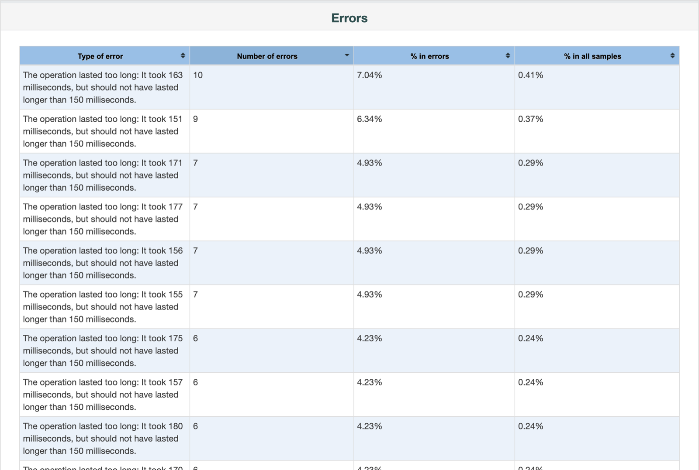
Errors: one row per message — Duration Assertion breaches split by ms
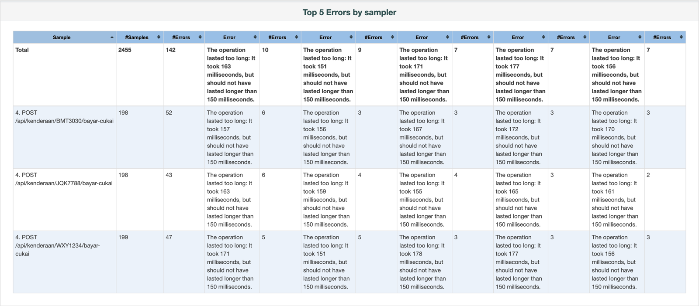
Top 5 Errors by sampler: only the 3 bayar-cukai POSTs fail
🎯
Errors tells you what; Top 5 by sampler tells you where. SLA breaches from a Duration Assertion count as errors.
Day 2 · S3 — Timing: connect, latency, response time
Three stopwatches in one sample
Connect
send + server processing → first byte
receive rest of response
Latency ≈ time to first byte (INCLUDES connect)
Response time / elapsed = just before send → just after the LAST byte
one .jtl row (JMeter 5.6)csv
timeStamp,elapsed,label,responseCode,…,Latency,IdleTime,Connect
1791115262980,141,1. POST /api/log-masuk,200,…,140,0,10
Pattern
Interpretation
Latency ≈ response time
Time spent on the server (processing) → profile code / DB
Small latency, large RT
Large response transfer / network → size, compression
Connect rising
Connection exhaustion / no keep-alive
Connect10ms
Latency140ms
Elapsed141ms
💡
Small response: almost all of the 141 ms is server processing. Connect is 10 ms on the first connection, ~1 ms with keep-alive.
🌐
JMeter is not a browser: response time excludes rendering and JavaScript.
Day 2 · S3 — Screenshot
Latencies Over Time: time to the first byte
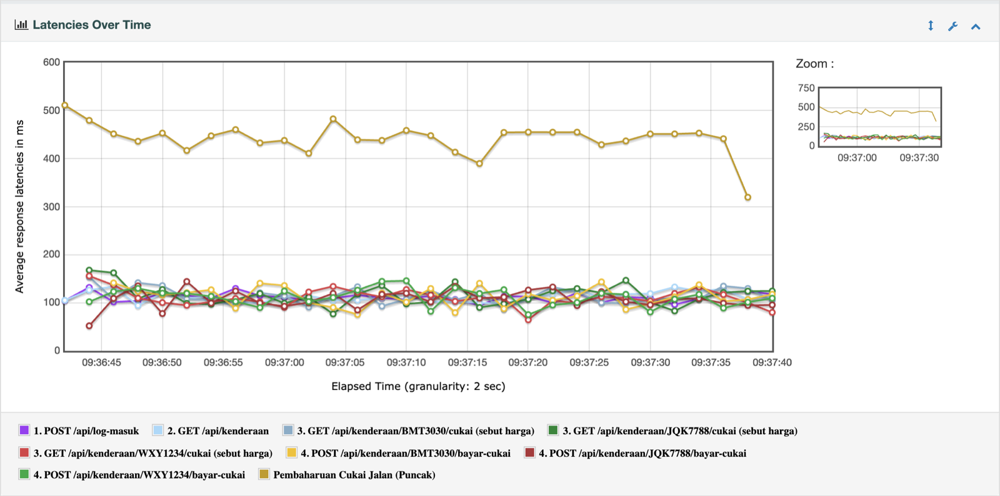
Latencies Over Time — compare with Response Times Over Time
⏱️
Latency = request sent → first byte back.
🔀
Latency ≈ response time → the server is thinking. A big gap → large payload or slow network.
Day 2 · S3 — Charts → Over Time
Over Time: is the system stable throughout the test?
Graph
Axes
Question answered
Warning sign
Response Times Over Time
Time · average ms per label (incl. transactions)
Is response time stable throughout the test?
Steadily rising line — degradation / memory leak
Response Time Percentiles Over Time (successful responses)
Time · Min, Median, 90th, 95th, 99th, Max — successful samples
Does the tail (p95/p99) widen at peak?
p99 spikes at maximum active threads
Active Threads Over Time
Time · active threads per Thread Group
Did the load model (ramp-up → steady) happen as planned?
Threads drop early = test / generator problem
Bytes Throughput Over Time
Time · bytes received/sent per second
Is the network the limit?
Flat even as users increase
Latencies Over Time
Time · average latency
Time to first byte — server processing
Latency ≈ response time = slow server
Connect Time Over Time
Time · average connect time
TCP/TLS connection problems?
Rising = connection exhaustion / no keep-alive
⏱️
Interval = overall_granularity (default 60 s). A 60 s run = 1–2 points! Regenerate with -Jjmeter.reportgenerator.overall_granularity=5000.
📈
R1 (5 s granularity): HTTP sample 95th pct flat at 172–181 ms per interval; transaction row 430–470 ms throughout the steady phase.
Day 2 · S3 — Screenshots
Over Time charts from the peak run
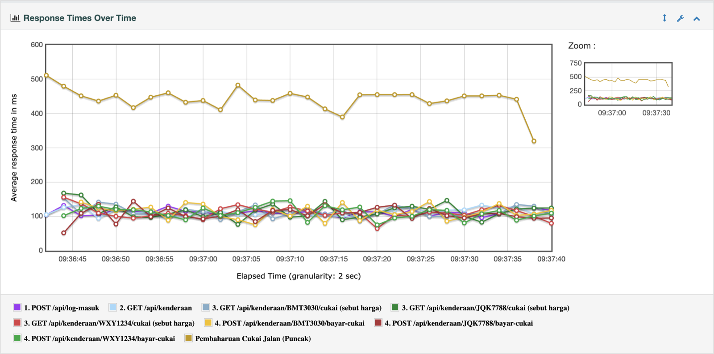
Response Times Over Time — transaction line (~450 ms) above its requests (~110 ms)
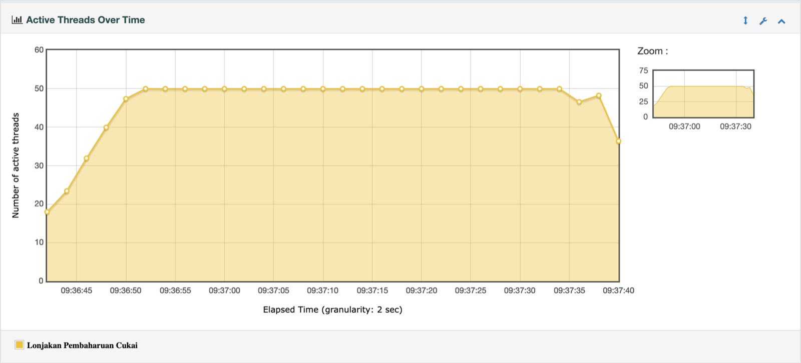
Active Threads Over Time — 0 → 50 in 10 s, hold, ramp-down
✅
First check Active Threads: did the load model really run? Then read response time against that load — flat lines = stable.
Day 2 · S3 — Charts → Throughput
Throughput: how much work, and when does it fail?
Graph
Axes
Question
Warning sign
Hits Per Second
Time · HTTP requests sent per second
How much load did JMeter generate?
Hits/s flat while threads rise
Codes Per Second
Time · responses per second by HTTP code (200, 500…)
When do server errors occur?
5xx series at peak. Assertion failures are still 200 here
Transactions Per Second
Time · completed samples per second per label, -success / -failure
Which label fails, and when?
-failure series rising
Total Transactions Per Second
Time · Transaction-success / Transaction-failure
Overall system throughput
Flat while users rise = saturated
Response Time Vs Request
Global requests per second · median RT
Does RT rise as rate rises?
Steeply rising curve = knee point
Latency Vs Request
Global requests per second · median latency
Same, for latency
—
Hits/s · R1 Total41.29HTTP requests per second
TPS · R1 transaction10.46renewals per second
Ratio≈ 4 : 11 transaction = 4 hits
Day 2 · S3 — Screenshots
Throughput charts: per label, and total under ramp-up
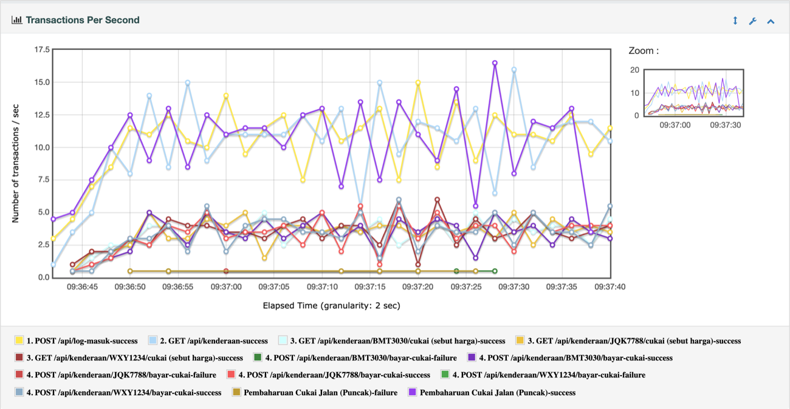
Transactions Per Second per label (success / failure)
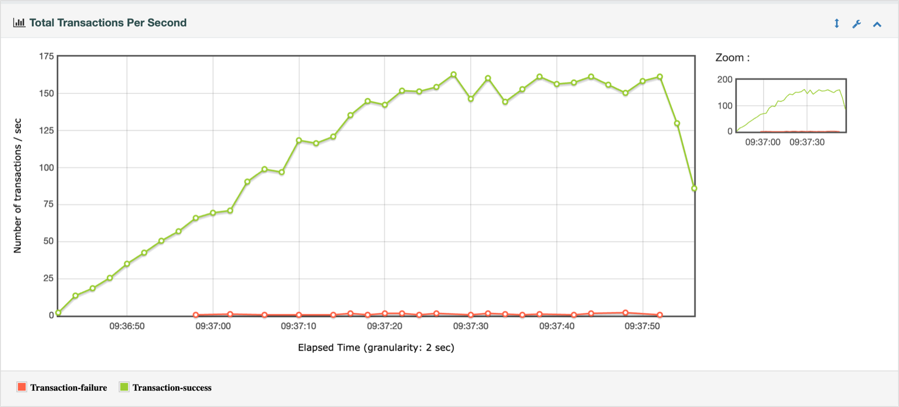
Total TPS (200 users, slow server): climbs with ramp-up, then levels off
📈
TPS that levels off when users stop growing is normal. TPS that levels off while users keep growing = the system has hit its limit.
Day 2 · S3 — Charts → Response Times
Response Times: the full shape of the distribution
Graph
Axes
Question
Response Time Percentiles
Percentile 0–100 · ms
At which percentile does time spike?
Response Time Overview
4 bars (thresholds = APDEX T/F)
APDEX-style summary for management
Time Vs Threads
Active threads · average ms
Does RT change with concurrency?
Response Time Distribution
100 ms buckets · count
Unimodal? Two peaks = two code paths (cache hit/miss)
Response Time Overview · 4 bars
≤ 500ms
> 500ms and ≤ 1,500ms
> 1,500ms
Requests in error
Illustrative shape — not run figures.
🗣️
The easiest graph for management: “X% of requests within 0.5 s, Y% failed.”
🧭
Response Time Percentiles = the graph version of the 90th/95th/99th pct columns. A flat curve that spikes at the end = long tail (the “average lies” slide).
Day 2 · S3 — Screenshots
Percentiles and Distribution from a real run
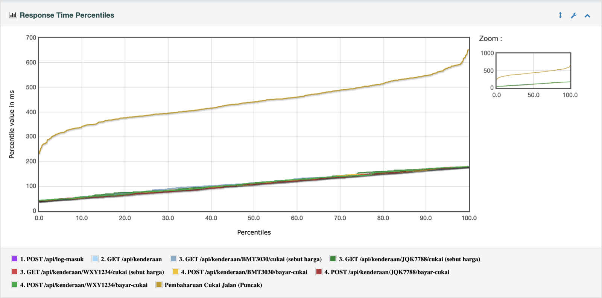
Response Time Percentiles — read p90/p95 on the x-axis; the tail rises near p99
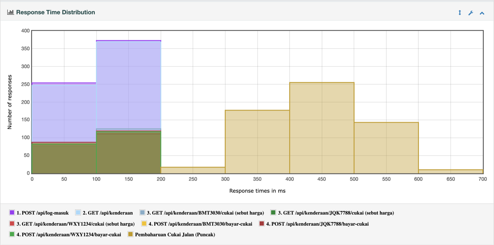
Response Time Distribution — samples per time bucket
📐
Percentile curve answers “how slow for 95 % of users?” · Distribution answers “is there a second hump?” (two populations).
Day 2 · S3 — Interpretation patterns
Throughput vs response time: recognising saturation
🧪
Mock limitation: latency is a random setTimeout — it does not saturate. On a laptop, the limit is usually the laptop CPU (JMeter + Node share it).
Pattern in the graph
Interpretation
Action
Threads ↑, throughput ↑ in step, RT flat
Healthy below capacity
Increase load (stress)
Threads ↑, throughput flattens, RT rises
Saturated — requests queue
Find the bottleneck (server metrics)
Errors start after N threads
Capacity limit / resources exhausted
N = limit; report it
RT slowly rises under constant load
Degradation — memory, data
Soak test; monitor memory
Errors flat, independent of load
Functional / synthetic errors
Compare 1–5 user baseline
Errors only during ramp-up
Warm-up (cold start)
Exclude that period — state it
Day 2 · S3 — Screenshots 200 users · slow server
Slower server, more users — but not saturated
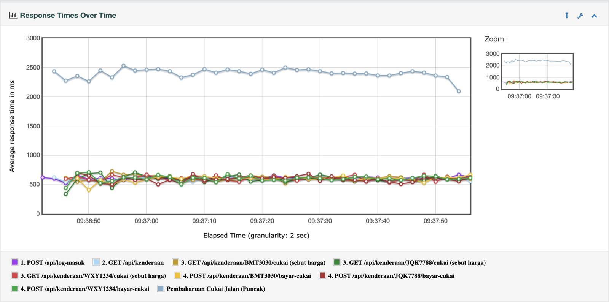
Slow server: every line shifts up; the transaction ≈ 2.4 s
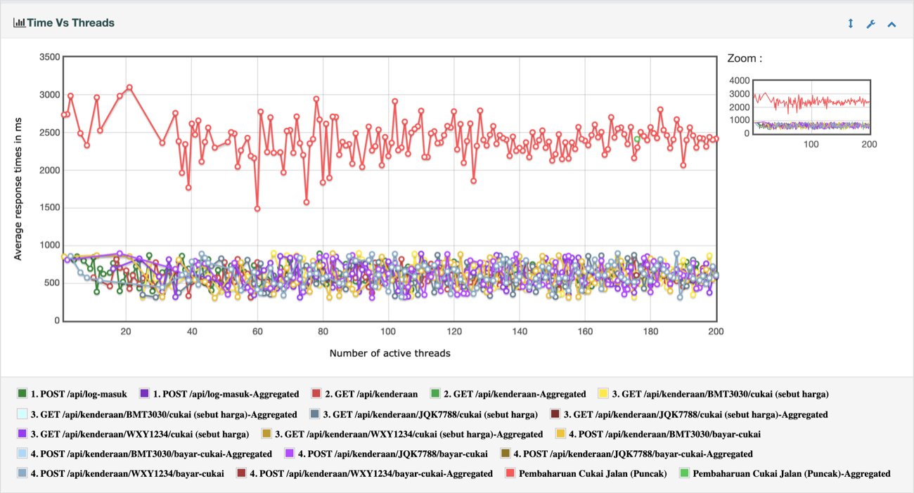
Time Vs Threads: flat from 1 → 200 threads = not saturated
⚠️
This is the healthy reference. Our mock does not queue, so it never saturates. A real bottleneck shows response time rising with threads while TPS stops growing.
Day 2 · S3 — Glossary (1/2) · timing & statistics
Terms as JMeter measures them
Term
Definition
eJPJ example
Response time / Elapsed
Just before the request is sent → just after the last response byte; no render/JS
elapsed = 141 ms login
Latency
Until the first part of the response (≈ TTFB); includes connect
140 ms (elapsed 141)
Connect time
Establishing the connection (incl. SSL/TLS handshake)
10 ms first, ~1 ms keep-alive
Throughput
Number of requests ÷ total time (start of first sample → end of last)
Total 41.29/s (R1)
Hits/s
HTTP requests sent per second
4 hits per renewal
TPS
Samples completed per second; for a Transaction Controller = business transactions/s
10.46 renewals/s
Average (mean) · Median
Sum ÷ count · 50th percentile
Skewed by extreme values
Percentile (pNN)
NN% of samples ≤ this value
p95 = 583 ms
Standard deviation
Spread of RT (population standard deviation); Summary Report, not in the dashboard
High = inconsistent
Error %
Failed samples ÷ total × 100 (HTTP code, network, assertion)
Day 2 · S3 — Writing findings templat-laporan-ujian.md
One finding = Evidence → Impact → Cause → Recommendation
EVIDENCEFigure + dashboard sectionStatistics → 95th pct = 583 ms
→
IMPACTOn users / the business~1 in 100 citizens retries payment
→
CAUSEHypothesissay so if not yet confirmed by server metrics
→
RECOMMENDATIONAction + owner+ severity: Critical … Info
❌ Weak
✅ Strong
“The system is rather slow.”
“At 50 users (10.5 trans/s), the Pembaharuan Cukai Jalan (road tax renewal) transaction p95 = 583 ms (NFR ≤ 2000 ms ✅) — Statistics.”
“There are errors.”
“6 payments (1.00% of transactions) failed with 500/Internal Server Error, scattered throughout the test (Codes Per Second) — not load-related; NFR < 1% failed. Recommendation: investigate the bayar-cukai logs.”
“The graph went up.”
“On the slow mock, throughput dropped 45% (10.46 → 5.78 trans/s) at the same 50 users; p95 4969 ms violates the NFR.”
📝
Exercise 5: three findings with your figures — F1 response time vs NFR · F2 500 errors & Error % · F3 effect of the SLA threshold. Full example (D1–D4, R1/R2/R3) in section B of the template. Start the report with the decision, not a graph.
Day 2 · S3 — Multi-site agents 09-berbilang-lokasi.jmx
One controller, agents at several sites, one result file
CONTROLLER · jmeter -n -RSends the .jmx + -G propsCollects every sample → semua.jtl → dashboard
All agents, same value — load model (pengguna, gelung)
-J (agent)
That agent only — per-site values (site, port)
-J (controller)
Controller only — e.g. report generator props
-R a,b
Remote agents (host[:port], default 1099)
🔐
RMI over SSL is on by default: create rmi_keystore.jks (bin/create-rmi-keystore.sh) and copy it to every machine — or server.rmi.ssl.disable=true on all sides, trusted lab only.
Day 2 · S3 — Multi-site agents · combined dashboard
Same dashboard — what changes with several sites
Statistics · one row per site per step
Label
#Samples
Error %
Average
95th pct
[KL] 1. POST /api/log-masuk
30
0.00%
121
180
[PENANG] 1. POST /api/log-masuk
30
0.00%
621
896
[KL] Pembaharuan Cukai Jalan
30
0.00%
476
640
[PENANG] Pembaharuan Cukai Jalan
30
0.00%
2430
3000
Total (HTTP samples, both sites)
240
0.00%
363
873
🔎
Use the table's search box: type [PENANG] to see one site. The Total row mixes all sites — never quote it alone.
LABELS
Per-site rows everywhere
Statistics, Errors / Top 5, Response Times Over Time and Transactions Per Second all split by [SITE] prefix.
ACTIVE THREADS OVER TIME
One series per agent
127.0.0.1:1099-Pengguna Pembaharuan Cukai and 127.0.0.1:1100-… — the JTL threadName is prefixed with the agent's host:port. 10 threads each = 20 users.
RESPONSE TIME
Differs by network distance
Same server, same script — the far site pays the extra round trips in every request (Latency and Connect too).
Day 2 · S3 — Multi-site agents · per-site comparison
KL vs PENANG — same script, same server, different users' experience
Site
Rows
Samples
Error %
Avg (ms)
p95 (ms)
TPS
KL
Pembaharuan Cukai Jalan (transaction)
30
0.00%
476
640
1.30
KL
HTTP samples (Total)
120
0.00%
119
178
4.04
PENANG
Pembaharuan Cukai Jalan (transaction)
30
0.00%
2430
3000
1.06
PENANG
HTTP samples (Total)
120
0.00%
607
892
3.51
Combined
Dashboard Total — both sites blended
240
0.00%
363
873
6.90
Verified class run, JMeter 5.6.3 (5 Oct 2026): 10 users × 3 loops per agent × 2 agents = 20 users. PENANG = mock with +300–900 ms latency to simulate distance. Per-step p95: KL 175–180 ms · PENANG 886–896 ms.
FINDING 1 · PENANG ≈ 5× SLOWER
Transaction avg 2430 ms (p95 3000) vs KL 476 ms (p95 640)
Every HTTP step ~570–670 ms vs ~110–130 ms, and 0% errors at both sites → latency on the path to the site, not an application failure. Check PENANG's network/WAN route before blaming the server.
FINDING 2 · THE BLEND HIDES A SITE
Combined avg 363 ms looks “OK”
NFR p95 ≤ 800 ms per step: KL PASS (175–180 ms), PENANG FAIL (886–896 ms). Always report per site, never the blended average alone.
Day 2 · S3 — Multi-site agents · two ways to the report
Live distributed run — or each site runs alone and you merge
A · LIVE DISTRIBUTED (-R)
One run, one .jtl
Same start time everywhere · needs RMI ports open between sites · controller receives all samples.
B · SEPARATE RUNS + MERGE
No RMI between sites
Each site runs plain jmeter -n at an agreed time · copy JTLs back · merge · -g.
⚠️
Merge only JTLs with the same columns (same jmeter.properties save settings) — keep one header row.
B · merge per-site JTLs → one reportsh
# at each site, at the agreed time — plain non-GUI, no -R
jmeter -n -t ../test-plans/09-berbilang-lokasi.jmx \
-Jsite=KL -Jport=3000 -l hasil/KL.jtl
jmeter -n -t ../test-plans/09-berbilang-lokasi.jmx \
-Jsite=PENANG -Jport=3001 -l hasil/PENANG.jtl
# centrally: one header, rows sorted by timeStamp → one report
node laporan-lokasi.js gabung hasil/gabung.jtl hasil/KL.jtl hasil/PENANG.jtl
jmeter -g hasil/gabung.jtl -o laporan/gabung
one site only · filter by label prefixsh
# split by [SITE] prefix → one report per site
node laporan-lokasi.js pisah hasil/semua.jtl hasil KL PENANG
jmeter -g hasil/KL.jtl -o laporan/KL
# or let JMeter filter statistics + graphs (Total = KL only)
jmeter -g hasil/semua.jtl -o laporan/KL-f \
-Jjmeter.reportgenerator.sample_filter='^\[KL\].*'
# graphs only: series_filter needs DOUBLED backslashes
# -Jjmeter.reportgenerator.exporter.html.series_filter='^\\[KL\\]'
Day 2 · S3 — Multi-site agents · pitfalls
Before you trust a multi-site report
Clock sync (NTP) on every agent — timestamps from different clocks skew the Over Time graphs
CSV on every agent (same path) — and split the data so sites don't log in as the same user
Controller bottleneck — it receives every sample; keep the sample sender mode StrippedBatch (default), no GUI listeners
Firewall / RMI ports open both ways · SSL keystore on all, or SSL off on all
Same JMeter & Java versions (and plugins) on controller and agents
Results bandwidth — samples travel site → controller during the test; don't saturate the link you are measuring
Matching JTL headers before merging · users = threads × agents stated in the report
LAB 8 · QUIZ S3
Lab 8 — Multi-site report
Run hari-2/run/run-berbilang-lokasi.sh → two sites (KL, PENANG) → combined dashboard → per-site table (samples, Error %, avg, p95, TPS) → two findings in Evidence → Impact → Cause → Recommendation form.
🚫
Agents generate real load from every site: written authorisation must name every source network, not just the target.
Day 2 · Session 4
Planning a Performance Test
S4 · 3.45 – 5.00 pmN = X × (R + Z)
Test lifecycle · measurable NFRs · load model & Little's Law · pacing
Test plan template · mini presentation · ⭐ CI, distributed, Grafana · closing
LAB Exercise 6 — Plan + Little's Law · Exercise 7 — Mini presentation · QUIZ S4 · Day quiz
Day 2 · S4 / S4
SESSIONS4
Day 2 · S4 — Lifecycle
The performance test lifecycle — you've already done half
1Requirements & NFRs
→
2Load model
→
3Scriptrecord → clean up
→
4Test data
→
5Environment & monitoring
→
6Executebaseline → … → soak
→
7Analyse
→
8Report↺ fix & repeat 6
Phase
Key question
Output
Today
1. Requirements & NFRs
What does the business need? What is “fast enough”?
Table of measurable NFRs
S4 · NFR
2. Load model
How many, doing what, how often?
Target rate, mix, N users
S4 · Little's Law
3. Script
Realistic & replayable journey
.jmx
S1–S2 ✅
4. Data
Enough accounts/vehicles & synthetic
CSV
S2 ✅
5. Environment
Where? Production-equivalent? Who monitors?
Environment list + monitoring
S4
6. Execute
Run types in order
.jtl + dashboard
S3 ✅ · S4
7. Analyse
NFRs pass? Where is the limit? Why?
Findings
S3 ✅
8. Report
What is the decision & action?
Test report
S3 ✅
Day 2 · S4 — From requirements to NFRs
Testable NFRs: SMART
Specific — which transactionMeasurable — metric + percentileAchievableRelevant — businessTime-bound — load for how long
❌ Vague
✅ Testable
“The portal must be fast.”
“At 10 transactions/s for 30 minutes, the Pembaharuan Cukai Jalan (road tax renewal) transaction p95 ≤ 2000 ms, Error % < 1%.”
“Handle lots of users.”
“Support 600 concurrent users (Little's Law load model) with application server CPU < 75%.”
“No errors.”
“Error % < 1% per transaction; no sustained 5xx errors > 1 minute.”
SLA · LOOSEST
Contractual promise
To users / clients.
SLO
Internal target
Operations — stricter than the SLA.
NFR · WHAT WE TEST
Before go-live
JMeter: Duration Assertion (per sample) + percentile in the report.
Day 2 · S4 — Load model & Little's Law
User counts are calculated, not guessed
N = X × (R + Z)
N concurrent users · X throughput (trans/s) · R response time (s) · Z think time per iteration (s)
eJPJ WORKED EXAMPLE · TRAINING ASSUMPTIONS, NOT OFFICIAL DATA
Peak-hour volume
36,000 renewals / 1 hour
Target rate X
36,000 ÷ 3,600 = 10 transactions/s
HTTP requests
10 × 4 = 40 requests/s
R (conservative = NFR limit)
2 s
Z list 15 + quote 20 + pay 23
58 s
N
10 × (2 + 58) = 600 concurrent users
VERIFIED IN THE LAB · PLAN 07
Z ≈ 4 s (0.5–1.5 s × 4) · 50 users
R1: X = 10.46 R = 0.446 s Z = 4.0 s
N = 10.46 × 4.446 ≈ 46.5
R3: X = 5.78 R = 3.954 s Z = 4.0 s
N = 5.78 × 7.954 ≈ 46.0average active threads ≈ 45.8 (ramp-up 10 s)
↔️
Two directions: (1) planning — target X → N threads; (2) checking a report — X × (R + Z) ≠ average active threads → timers not running, threads died early, or generator overloaded.
🧮
Quiz: 18,000/hour, R = 2 s, Z = 28 s → X = 5 → N = 150. Units: everything in seconds.
Day 2 · S4 — Pacing & transaction mix
Control the rate: Constant / Precise Throughput Timer
Timer
Key fields
Example for 10 transactions/s
Constant Throughput Timer
Target throughput (in samples per minute) · Calculate Throughput based on (this thread only / all active threads / … in current thread group / … (shared))
600 · all active threads in current thread group (shared)
Precise Throughput Timer
Target throughput (in samples per "throughput period") · Throughput period (seconds) · Test duration (seconds)
10 · 1 · 1800
📍
Throughput timers count the samples they affect. Place it as a child of the first sampler (1. POST /api/log-masuk) to control the transaction rate — under a TC with 4 samplers, the rate is counted per sampler.
VERIFIED
CTT 300 (shared, current TG) as a child of login, copy of 07, 50 users → login 5.39/s (≈ 300/min) even though 50 users can reach ~10/s.
🐢
Timers can only slow things down. If N < X × (R + Z), the target is not reached — add threads.
Journey
%
Rate
JMeter
Renewal (login → list → quote → pay)
70%
7 /s
Plan 07
Check only (no payment)
30%
3 /s
Throughput Controller (Percent Executions) wrapping pay, or a separate Thread Group
🗃️
Data: enough unique test accounts (≈ N), synthetic, resettable. Reusing the same data = “false caching” (results too good).
Day 2 · S4 — Run types & order
Smoke → baseline → load → stress → spike → soak
1 · SMOKE
Do the script & environment work?
05 (10 × 2) → 0 functional errors
2 · BASELINE
Low-load reference
-Jpengguna=5 -Jrampup=5 -Jtempoh=60
3 · LOAD
Does expected peak pass the NFRs?
-Jpengguna=50 -Jrampup=10 -Jtempoh=60
4 · STRESS
Where is the knee point?
Step up -Jpengguna=50 → 100 → 150 …
5 · SPIKE
Sudden surge — does it recover?
-Jpengguna=150 -Jrampup=1
6 · SOAK
Stable over the long term?
-Jpengguna=35 -Jtempoh=1800 (real: hours)
🧭
Always baseline first. Without a baseline, you can't tell whether 1% errors are caused by load — or already exist at 1 user (our SUT's ERROR_RATE 1%).
Day 2 · S4 — Criteria, monitoring & risks
When to start, when to stop, who monitors
ENTRY CRITERIA
Script passes smoke
Data ready; environment frozen
Monitoring active
Written authorisation; NOC/SOC notified
EXIT CRITERIA
All runs completed
Analysed vs NFRs
Report delivered
SUSPEND THE TEST IF
Error % > 10% for 2 min
Load generator CPU > 80%
System owner asks to stop
Load generatorCPU, RAM, networkTester
JMeter.jtl, dashboard, ⭐ GrafanaTester
Application serverCPU, memory, threadsApp team
DatabaseSlow queries, connectionsDBA
Risk
Mitigation
Environment smaller than production
State the ratio; scale in steps
Load generator becomes the bottleneck
Non-GUI, no VRT, CPU < 80%
Data exhausted / repeated
Large enough CSV, reset data
Impact on shared systems
Time window, “STOP” contact person
Third parties (payment gateway)
Stub; never target third parties
🔍
Without server metrics, a report only answers what — not why.
Day 2 · S4 — Ethics & written authorisation
Before anyone presses Start: who signs off?
⛔
Load testing someone else's system without authorisation = a DoS attack and against the law — the size of the load is irrelevant.
✅ Mandatory before testing a real system
❌ Not an excuse
Written authorisation from the system owner and the head of infrastructure/security
“It's only a small load”
Scope: host/URL, endpoints, maximum load, time window
“At night, nobody will notice”
NOC/SOC notified; contact person & STOP procedure
“I work for this department”
Designated staging environment; synthetic data
“Use a VPN so it isn't detected”
JPJ REFLEX
“Who signed the authorisation for this test?” — before anyone presses Start. In class: localhost:3000 only, and not a colleague's IP.
Day 2 · S4 — Workshop templat-pelan-ujian.md
Exercise 6: fill in the plan · Exercise 7: present in 3 minutes
PLAN TEMPLATE STRUCTURE (eJPJ example already filled in)
0. Document information
8. Test types & run schedule
1. Background & objectives (Q1–Q4)
9. Entry / exit / suspension criteria
2. Scope
10. Monitoring
3. NFR / SLA (NFR-01…06)
11. Risks & mitigation
4. Load model + Little's Law + pacing
12. Authorisation & ethics
5. Transaction mix & scripts
13. Roles & responsibilities
6. Test data
14. Deliverables
7. Test environment
Appendix A — Little's Law worksheet
Exercise 6 · pairs · 20 minutesPick a scenario: (a) road tax, (b) paying a summons on the last discount day, (c) an internal system — concept only. ≥ 4 NFRs · V → X → N · hits/s · CTT = X × 60
Exercise 7 · 3 minutes per pair(a) key NFRs (b) N & calculation (c) run types (d) one finding from S3 — Evidence → Impact → Recommendation
Mandatory closing sentence“Before the real test, we need written authorisation from …”
⏱️
Maximum 45 s per part · one key figure per part. Other pairs ask one question: “How do you know …?”
Day 2 · S4 — ⭐ At a glance: CI, distributed, Grafana
When the plan becomes routine
SLA gate · reads statistics.jsonsh
STAT=hasil/laporan07-sla2000/statistics.json; L="Pembaharuan Cukai Jalan (Puncak)"
P95=$(jq --arg l "$L" '.[$l].pct2ResTime' "$STAT"); ERR=$(jq --arg l "$L" '.[$l].errorPct' "$STAT")
echo "p95=${P95} ms error=${ERR}%"
awk -v p="$P95" -v e="$ERR" 'BEGIN { exit !(p < 2000 && e < 1) }' && echo "LULUS SLA" || { echo "GAGAL SLA"; exit 1; }
⚠️
jmeter -n exits with code 0 even when samples fail. Our R1: p95 583 ms, error 1.0033% → FAIL (right on the limit, synthetic 500s). Alternatives: Taurus (bzt) passfail, Jenkins Performance plugin.
DISTRIBUTED
-R w1,w2 -Gpengguna=100
Each worker (jmeter-server) runs the entire Thread Group → 100 × 2 = 200. -G sends properties to workers; the CSV must exist on every worker.
GRAFANA
Backend Listener → InfluxDB
InfluxdbBackendListenerClient. Grafana = live monitoring; HTML dashboard = post-mortem afterwards.